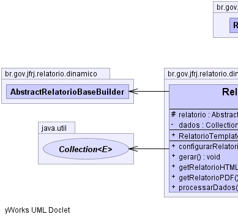
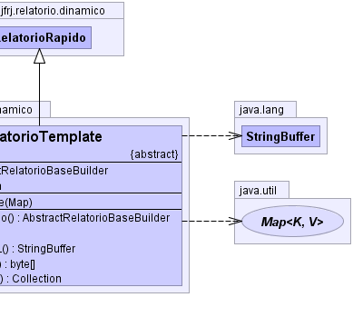

ar.com.fdvs.dj.domain.builders.DynamicReportBuilder
br.gov.jfrj.relatorio.dinamico.AbstractRelatorioBaseBuilder
br.gov.jfrj.relatorio.dinamico.RelatorioRapido
br.gov.jfrj.relatorio.dinamico.RelatorioTemplate
ar.com.fdvs.dj.domain.builders.DynamicReportBuilder
br.gov.jfrj.relatorio.dinamico.AbstractRelatorioBaseBuilder
br.gov.jfrj.relatorio.dinamico.RelatorioRapido
br.gov.jfrj.relatorio.dinamico.RelatorioTemplate
|
|||||||||
| PREV CLASS NEXT CLASS | FRAMES NO FRAMES | ||||||||
| SUMMARY: NESTED | FIELD | CONSTR | METHOD | DETAIL: FIELD | CONSTR | METHOD | ||||||||
java.lang.Object
public abstract class RelatorioTemplate
USE ESTA CLASSE para a criação de relatórios rápidos.
Procedimentos para criar relatorios no siga-ex
RESUMO:
1) Criar a classe do relatório (extends RelatorioTemplate)
2) Implementar os métodos:
2.1) construtor passando um Map <-- Com o parâmentros que podem ser usados no
relatório.
2.2) configurarRelatorio() <-- Para definir o layout do relatório.
2.3) processarDados() <-- Para gerar um Set ou List contendo os dados do
relatório.
3) Usar o relatório:
Exemplo: MeuRelatorio r = new MeuRelatorio(null); r.gerar();
JasperViewer.viewReport(r.getRelatorioJasperPrint());
A) Crie a classe do relatorio
a.1) Crie um builder baseado no AbstractRelatorioBaseBuilder caso não use o
RelatorioTemplate ou RelatorioRapido
a.2) Crie a classe do relatorio baseada no template
(br.gov.jfrj.siga.ex.relatorio.dinamico.RelatorioTemplate.java)
1) Crie o menu do relatório (/sigaex/WebContent/paginas/menus/menu.jsp)
Exemplo:
|  |  |
| Field Summary | |
|---|---|
private java.util.Collection |
dados
|
protected AbstractRelatorioBaseBuilder |
relatorio
|
| Fields inherited from class br.gov.jfrj.relatorio.dinamico.RelatorioRapido |
|---|
CENTRO, DIREITA, ESQUERDA |
| Fields inherited from class br.gov.jfrj.relatorio.dinamico.AbstractRelatorioBaseBuilder |
|---|
dr, ds, estiloColuna, estiloSubtitulo, estiloTitulo, estiloTituloColuna, estiloTituloGrupo, parametros |
| Fields inherited from class ar.com.fdvs.dj.domain.builders.DynamicReportBuilder |
|---|
autoTexts, concatenatedReports, globalFooterCrosstabs, globalHeaderCrosstabs, globalVariablesGroup, groupFooterSubreports, groupHeaderSubreports, options, report |
| Constructor Summary | |
|---|---|
RelatorioTemplate(java.util.Map parametros)
Caso o relatório precise receber parâmetros, use o construtor para obrigar o utilizador do relatório a informá-los. |
|
| Method Summary | |
|---|---|
abstract AbstractRelatorioBaseBuilder |
configurarRelatorio()
Classe que permite o uso do Design Pattern Template Method. |
void |
gerar()
|
java.lang.StringBuffer |
getRelatorioHTML()
|
byte[] |
getRelatorioPDF()
Método que gera o relatório em PDF. |
abstract java.util.Collection |
processarDados()
Implemente este método para processar os dados que serão exibidos no relatório. |
| Methods inherited from class br.gov.jfrj.relatorio.dinamico.RelatorioRapido |
|---|
addColuna, addColuna, delColuna, getRelatorioJasperPrint, setDados |
| Methods inherited from class br.gov.jfrj.relatorio.dinamico.AbstractRelatorioBaseBuilder |
|---|
copiarEstilo, setDadosColecaoMap |
| Methods inherited from class ar.com.fdvs.dj.domain.builders.DynamicReportBuilder |
|---|
addAutoText, addAutoText, addAutoText, addAutoText, addAutoText, addAutoText, addAutoText, addChart, addColumn, addConcatenatedReport, addConcatenatedReport, addConcatenatedReport, addConcatenatedReport, addConcatenatedReport, addField, addFirstPageImageBanner, addFont, addFooterCrosstab, addGlobalFooterVariable, addGlobalFooterVariable, addGlobalFooterVariable, addGlobalHeaderVariable, addGlobalHeaderVariable, addGroup, addHeaderCrosstab, addImageBanner, addParameter, addResourceBundle, addStyle, addSubreportInGroupFooter, addSubreportInGroupFooter, addSubreportInGroupFooter, addSubreportInGroupFooter, addSubreportInGroupFooter, addSubreportInGroupFooter, addSubreportInGroupFooter, addSubreportInGroupHeader, addSubreportInGroupHeader, addSubreportInGroupHeader, addSubreportInGroupHeader, addSubreportInGroupHeader, addSubreportInGroupHeader, addSubreportsToGroups, build, concatenateReports, setAllowDetailSplit, setBottomMargin, setBottomMargin, setColumnSpace, setColumnSpace, setColumnsPerPage, setColumnsPerPage, setColumnsPerPage, setColumnsPerPage, setDefaultStyles, setDetailHeight, setDetailHeight, setFooterHeight, setFooterHeight, setGlobalFooterVariableHeight, setGlobalHeaderVariableHeight, setGrandTotalLegend, setGrandTotalLegendStyle, setHeaderHeight, setHeaderHeight, setIgnorePagination, setLeftMargin, setLeftMargin, setMargins, setOddRowBackgroundStyle, setPageSizeAndOrientation, setPrintBackgroundOnOddRows, setPrintBackgroundOnOddRows, setPrintColumnNames, setProperty, setQuery, setReportLocale, setReportName, setRightMargin, setRightMargin, setSubtitle, setSubtitleHeight, setSubtitleStyle, setTemplateFile, setTemplateFile, setTitle, setTitleHeight, setTitleStyle, setTopMargin, setTopMargin, setUseFullPageWidth, setUseFullPageWidth, setWhenNoData, setWhenNoData, setWhenNoDataAllSectionNoDetail, setWhenNoDataBlankPage, setWhenNoDataNoPages, setWhenNoDataShowNoDataSection, setWhenNoDataType, setWhenResourceMissing, setWhenResourceMissingLeaveEmptySpace, setWhenResourceMissingReturnNull, setWhenResourceMissingShowKey, setWhenResourceMissingThrowException |
| Methods inherited from class java.lang.Object |
|---|
clone, equals, finalize, getClass, hashCode, notify, notifyAll, toString, wait, wait, wait |
| Field Detail |
|---|
private java.util.Collection dados
protected AbstractRelatorioBaseBuilder relatorio
| Constructor Detail |
|---|
public RelatorioTemplate(java.util.Map parametros)
throws ar.com.fdvs.dj.domain.builders.DJBuilderException
ar.com.fdvs.dj.domain.builders.DJBuilderException| Method Detail |
|---|
public void gerar()
throws java.lang.Exception
java.lang.Exception
public abstract AbstractRelatorioBaseBuilder configurarRelatorio()
throws ar.com.fdvs.dj.domain.builders.DJBuilderException,
net.sf.jasperreports.engine.JRException
ar.com.fdvs.dj.domain.builders.DJBuilderException
net.sf.jasperreports.engine.JRException
public abstract java.util.Collection processarDados()
throws java.lang.Exception
java.lang.Exception
public byte[] getRelatorioPDF()
throws net.sf.jasperreports.engine.JRException
net.sf.jasperreports.engine.JRException
public java.lang.StringBuffer getRelatorioHTML()
throws net.sf.jasperreports.engine.JRException
net.sf.jasperreports.engine.JRException
|
|||||||||
| PREV CLASS NEXT CLASS | FRAMES NO FRAMES | ||||||||
| SUMMARY: NESTED | FIELD | CONSTR | METHOD | DETAIL: FIELD | CONSTR | METHOD | ||||||||